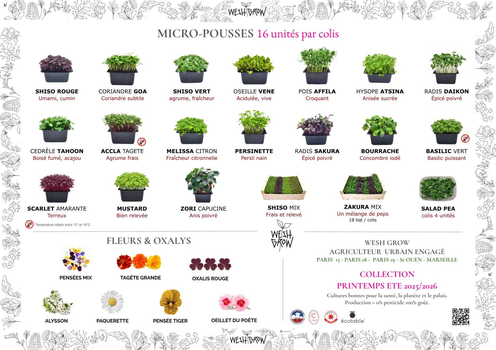

Mini-légumes
Biquinho · Cucamelon · Courgette fleur
Micro-pousses, fleurs comestibles, herbes aromatiques et mini-légumes : des cultures vivantes produites près des cuisines qui les subliment.
Découvrir les cultures ↓
Nous cultivons pour celles et ceux qui aiment vraiment manger. Pour les chefs, pour les assiettes, pour une agriculture qui respecte les femmes, les hommes, les ressources et le vivant.
Biquinho · Cucamelon · Courgette fleur

Fleur d’ail · Tagètes · Achillée · Ficoïde
« Un bon produit ne devrait pas traverser un continent pour arriver dans une assiette. »
Des assiettes de chefs aux tables les plus créatives, nos cultures apportent couleur, fraîcheur, texture et précision.
Nous travaillons avec celles et ceux qui choisissent la saison, le geste et le goût.
Voir les chefs qui nous font confiance ↗